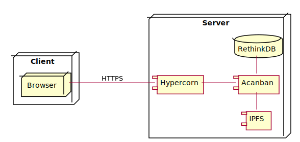

System Architecture¶
All the data and business logic handling is done on the server side in order to reduce workload for clients.
Since client only renders UI from HTML sent from server and send requests to the server, its internal details are not discussed in this section.
Figure 1 describes the architecture for our system. When a user access the site, a HTTPS request is sent to the server. The ASGI web server Hypercorn will take this request. Acanban module will process the request and make query to RethinkDB or IPFS if needed and respond to the client.

Figure 1 Server-Client architecture¶
Alternatively, a load balancer such as nginx can be added to distribute the requests to multiple server as is shown in Figure 2. Multiple instances of acanban are run to process incoming requests. They can write concurrently to a shared database.
![@startuml
skinparam Padding 10
node Client {
node Browser
}
node "Load Balancing Server" {
component NGINX as nginx <<load balancer>>
}
node "Web Server" as server {
component Acanban as acanban
component Hypercorn as hypercorn
}
node "Database cluster" as db {
database "RethinkDB" as r_1
database "RethinkDB" as r_2
database "RethinkDB" as r_3
database "RethinkDB" as r_4
}
node "IPFS Cluster" as ipfs {
component "IPFS" as i_1
component "IPFS" as i_2
component "IPFS" as i_3
component "IPFS" as i_4
}
Browser -[norank]- nginx: HTTPS
nginx "1" --- "1..*" hypercorn
hypercorn - acanban
acanban "1..*" --- "1..*" db
acanban "1..*" --- "1..*" ipfs
@enduml](../_images/plantuml-980cb0eb971ec83cd3025ea924ad6960ff24f8b4.svg)
Figure 2 Alternative architecture with load balancer¶
However, we do not implement this architecture within the scope of this project, due to following reasons:
We do not have several servers to implement.
For intended use, the expected requests can go up to as many as 1000. Load balancing for such few requests is overhead.